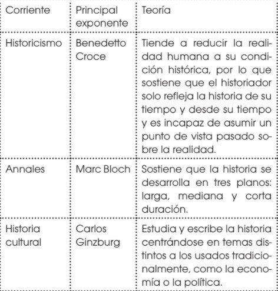
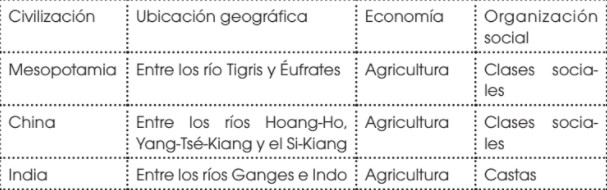
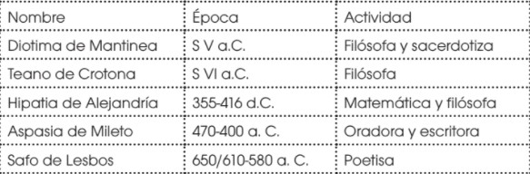
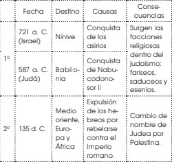
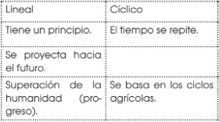

Respuesta de Actividades del Libro de Historia 1BGU
Elija la Unidad:
UNIDAD #0: EL MUNDO DE ENTREGUERRAS.
1. Observa el mapa.
a. ¿Por dónde discurre la línea que divide el Imperio de Oriente y el de Occidente?
La línea que divide el Imperio de Oriente del de Occidente discurre desde Europa hasta África por el Mar Mediterráneo.
b. ¿Cómo se denominó el Imperio Romano de Oriente en época medieval?
En la Época Medieval, el Imperio romano de Oriente fue de nominado Imperio bizantino.
c. ¿Qué reinos germánicos existían a finales del siglo V? Indica en qué Estado o Estados actuales se localizaba cada uno.
Los visigodos se encontraban en lo que actualmente es Portugal, España, y Francia. Los ostrogodos, en las actuales Italia y Suiza. Los francos en la actual Alemania. Los sajones en la actual Gran Bretaña.
2. La expresión «Edad Media» fue acuñada por los eruditos del Renacimiento (en la Edad Moderna), que valoraban la Antigüedad como un período de esplendor.
¿Por qué crees que le dieron este nombre?
Se llama así debido a que es un periodo de transición, que se caracterizó por su estancamiento cultural, quedando atrapado entre la magnificencia de la antigüedad y la riqueza que trajo aparejado el Renacimiento.
3. Averigua qué ocurrió en las siguientes fechas.
1453 - 1492 - 1517
—¿Crees que fueron sucesos que podrían marcar el paso de la Edad Media a la Moderna? Justifica tu respuesta
1453: La caída de Constantinopla en manos de los turcos.
1492: Llegada de los españoles a América.
1517: Martín Lutero expone sus 95 tesis contra las indulgencias y el Papado.
4. Lee el texto de Gombrich.
¿Crees que hay que considerar a las personas de otras épocas como estúpidas?¿Por qué?
Las personas de otras épocas no se puede considerar estúpidas, pues estas se adaptaban a su forma de vida, a su concepto y contexto.
Muchas veces tendemos a juzgar situaciones de manera muy sencilla, pero para entenderlas es necesario entrar en los procesos y el los contextos que se vivieron. De tal manera que las personas de otras épocas no fueron estúpidas, estas realmente se ajustaron y vivían según su forma y momento.
5. Piensa y debate.
a. ¿Crees que existe relación entre los problemas económicos y las políticas radicales? ¿Existe en la actualidad gente que defienda el nazismo? ¿En qué basan su propuesta política?
Generalmente los problemas económicos hacen que surjan ideologías radicales que llegan a instaurarse en el poder.
b. ¿Es lícito bombardear a la población civil para debilitar la moral de las tropas enemigas? ¿A qué nos referimos, actualmente, cuando hablamos de «daños colaterales»?
Bombardear la población civil para debilitar la moral de las tropas enemigas no es lícito. Los daños colaterales de las guerras son los efectos que sufre la población civil, como el hambre,la falta de servicios médicos, la incomunicación, etc.
6. Piensa y debate.
a. ¿Conoces algún caso posterior a 1991 en que Estados Unidos o la URSS hayan intervenido militarmente en algún país? ¿La intervención ha tenido el resultado que preveían?
Guerra de Vietnam (1959 - 1975) (Intervención de Estados Unidos)
Guerra de Corea (1951-1953) (Intervención de Estados Unidos)
Revolución húngara (1956) (Intervención de la URSS)
Invasión a Checoslovaquia (1968) (Intervención de la URSS)
Invasión a Afganistán (1979 - 1989) (Intervención de la URSS)
Guerra civil Dominicana (1965-1966) (Intervención de USA)
Crisis del Líbano (1958) (Intervención de USA)
Invasión de Granada (1983) (Intervención de USA)
Beirut (1982) (Intervención de USA)
Libia (1986) (Intervención de USA)
Panamá (1989) (Intervención de USA)
b. ¿Estás de acuerdo con la teoría del choque de civilizaciones de S. P. Huntington? ¿Los conflictos actuales han dejado de estar motivados por intereses económicos? Argumenta tu respuesta.
Desde su punto de vista, Huntington propone que los conflictos se producen a raíz de las diferencias entre civilizaciones más que de ideologías o conflictos económicos, en forma general, y toma de ello para decir que, en sí, la única civilización afectada en gran medida es la occidental, compuesta por Europa occidental, Norteamérica y Oceanía.
En cierto modo, tiene razón. El progresismo del siglo XXI se ha visto mayormente evidenciado en estas poblaciones, mientras que aquellas en otros hemisferios se han mantenido relativamente igual. Sin embargo, el agrupar a países como conglomerados de civilizaciones minimiza sus logros individuales, como es el hecho de Egipto en la civilización islámica, y su caracterización no abre espacio al cambio dentro de las mismas.
Los conflictos internacionales, por regla común, siguen guiados por motivos económicos. Tal es el motivo del interés del público internacional en Venezuela y no así con los países en África Central, por dar un ejemplo. Esto se debe a la gran cantidad de recursos naturales que este país posee
7. Lee atentamente las fuentes E y F, consulta la página web propuesta y realiza las siguientes actividades:
a.Busca información sobre Patrice Lumumba y redacta una breve biografía.
Dirigente de la emancipación del Congo (Katako-Kombé, Kasai, 1925 - Elisabethville, Katanga, 1961). Procedente de una de las regiones más pobres del centro del Congo belga, se instaló en 1947 en la capital de la colonia, Léopoldville (la actual Kinshasa). Su educación fue autodidacta, tras haber sido expulsado de varias escuelas misionales. Pronto se hizo notar en los movimientos asociativos indígenas por su militancia en favor de ideales igualitarios, antiimperialistas y pacifistas.
b. Explica los agravios que expone Lumumba. ¿De qué acusa a los antiguos colonizadores de su país?
Patrice Lumumba acusaba a los belgas de haber expoliado las riquezas del territorio congoleño, según él, el imperio colonial belga extrajo miles de toneladas de diamantes y otros minerales sin devolver ni una décima parte de aquella riqueza generada.
En cierta forma, Lumumba, quien se destacó como líder anticolonialista y promotor de la independencia de la República Democrática del Congo, tuvo razón al criticar el hecho de que Bélgica les cobrase parte de la deuda, habiendo la metrópolis hecho grandes fortunas con los recursos naturales explotados en el territorio durante siglos.
c. ¿Qué país europeo fue el colonizador del Congo durante ochenta años?
Bruselas fue el país que colonizó el Congo durante ochenta años.
d. Sitúa la independencia del Congo en el contexto del proceso de descolonización.
Por algunas colonias en la década de los 50 para hacer frente a los discursos anticoloniales de la época, que se unieron además a las guerrillas marxistas y al apoyo, por parte de países como Cuba y Unión Soviética en su emancipación.
e. ¿De qué manera influyó la guerra fría en el conflicto del Congo?
Influyó de manera que en áfrica se uniera a la guerra E.U y la unión sovietica que vino la muerte de lumumba (primer ministro del Congo) y así desató la crisis en el congo.
f. ¿Se cumplieron los deseos de Lumumba en relación con el futuro del Congo, y de África en general?
Sí se cumplieron, Lumumba luchó a favor de la descolonización del Congo y de todo el continente africano, y hoy en día El Congo es un país independiente y África es un continente soberano.
Patrice Lumumba fue el Primer Ministro de la República Democrática del Congo, quien luchó por liberar a su nación lo cual logró, pero este país heredaría serias deudas económicas, por lo que el país se subyacían en una profunda crisis.
UNIDAD #1: HISTORIA, CULTURA Y TRABAJO
1. Imagínate que estás realizando una investigación histórica sobre dónde vivían los seres humanos en el Neolítico. Di a qué fase de la investigación se refiere cada afirmación, y ordénalas.
a. Comparas esta información con la de una exposición en un museo sobre la Prehistoria en la que había dibujos de poblados neolíticos y explicaciones sobre la vida en este período histórico.
b. Visitas una excavación con restos de cabañas que formaban un poblado fechado a mediados del Neolítico, y consultas bibliografía específica.
c. Si en el Neolítico se practicaba la agricultura, la gente debió de dejar de ser nómada para poder cuidar los cultivos; es decir, pasó a vivir en poblados.
d. Elaboras un resumen en el que explicas que, en el Neolítico, los seres humanos empezaron a vivir en poblados a causa de la práctica de la agricultura.
respuesta:
Deben ir en este orden:
c. Elaboración de hipótesis.
b. Búsqueda de información.
a. Análisis de las fuentes de información.
d. Elaboración de conclusiones.
2. Imagina que se inicia una guerra entre los países A y B. Clasifica las siguientes afirmaciones según sean posibles causas o consecuencias de la guerra.
a. El país A lleva años asaltando los barcos comerciales del país B que pasan cerca de sus costas.
b. Las principales ciudades del país A sufren importantes destrucciones.
c. El rey del país B es un personaje muy belicoso y cree que una guerra con un país extranjero puede hacer aumentar su prestigio.
d. En el país B existe un grupo de comerciantes influyentes que creen que hay que dar una lección al país A.
e. El país A pierde aproximadamente un 10% de su población.
f. El precio del pan, un alimento básico, en el país B ha aumentado, porque muchos barcos cargados de trigo no pueden llegar a puerto, y la gente más pobre protesta.
g. La victoria en la guerra convierte al país A en el más influyente de la zona.
Posibles causas: a, c, d.
Posibles consecuencias: b, e, f, g.
3. En tu cuaderno realiza un cuadro sinóptico sobre el Historicismo, los annales y la historia cultural.

4. Escribe cuáles son las semejanzas y diferencias que tienen cada una.
Respuesta Abierta.
5. Investiga sobre la Microhistoria y la historia Cultural y realiza un ensayo comparativo de estas.
Respuesta abierta.
7. Observa la pintura egipcia de la página 18 y explica qué tipo de fuente es y en qué edad histórica se sitúa.
—Describe la pintura y explica qué información histórica aporta.
Es una fuente primaria y se sitúa en la historia. Se observan unos campesinos del antiguo Egipto cultivando la tierra. Se trata de un acontecimiento de carácter económico puesto que nos permite ver cómo era la estructura económica de la época.
8. Observa el eje cronológico que está en las páginas 18 y 19 y anota cuáles son las edades de la historia y los acontecimientos que nos sirven para datarlas.
Paleolítico: hace 2 500 000 años, aparición del ser humano. Neolítico: 9000 a. C., aparición de la agricultura. Edad de los
Metales: 4000 a. C., descubrimiento de los metales. Edad Antigua: 3000 a. C., aparición de la escritura. Edad Media: 476, Caída del Imperio Romano. Edad Moderna: 1453, Toma de Constantinopla. Edad Contemporánea: 1789, Revolución Francesa.
9. Indica a qué edad histórica corresponden los siguientes hechos.
a. 1337: Inicio de la Guerra de los Cien Años.
Edad Media
b. 27 a. C.: Octavio Augusto, primer emperador romano.
Edad Antigua
c. Hace 40 000 años: Inicio del Paleolítico Superior.
Prehistoria
d. 1859: Primer pozo de petróleo en Estados Unidos.
Edad Contemporánea
e. 1605: Cervantes publica Don Quijote de la Mancha.
Edad Moderna.
f. 2002: Entra en circulación el euro.
Edad contemporánea
10. Responde: ¿Cuáles son las diferencias entre historia e Historiografía?
La historia es la ciencia que estudia los hechos del pasado, a partir de las fuentes de información, con la finalidad de comprender sus causas y consecuencias. La historiografía es el estudio de los métodos utilizados por la historia para comprender el pasado.
11. Realicen un debate sobre las ideas que tiene cada uno sobre la cultura.
—Escriban las conclusiones del debate.
Respuesta abierta.
12. Hagan una comparación entre sus propias ideas y las aquí expuestas.
Respuesta abierta.
13. ¿Dónde se empleó por primera vez el término «cultura»?
En Roma
14. ¿Qué significaba «civilización» en la Antigüedad?
Pertenencia a la ciudad.
15. Responde: ¿Cuál fue el significado original de la palabra latina cultura?
La palabra latina cultura significaba «cultivo de la tierra».
16. Diferencia entre el significado original, el romántico y el actual del término cultura.
El significado original era el cultivo en general y en particular al cultivo de la humanidad y su diferenciación de lo salvaje. Era sinónimo de civilización. Luego, el romanticismo distinguió entre civilización y cultura, refiriéndose con el primer término al desarrollo material (económico y tecnológico); mientras el segundo se refería al cultivo de las facultades espirituales o intelectuales. En la actualidad, tiene un significado más neutral, al considerase como el conjunto de pensamientos, sentimientos y acciones de un grupo humano.
17. Responde: ¿Por qué el concepto de cultura que se tenía en el siglo XVIII era discriminatorio?¿Qué diferencias se establecían en esa época entre cultura y civilización?
El concepto era discriminatorio porque distinguía entre «hombres cultos» y «hombres incultos» en vez de considerar las culturas como diversas.
18. Elabora un pequeño cuadro comparativo entre producción material y producción simbólica.
Producción material: objetos
Producción simbólica: normas, valores, conocimientos, creencias
19. Haz una lista de aspectos de tu vida cotidiana que forman parte de la cultura.
Respuesta orientativa: alimentos, vestido, idioma, educación, religión, música, valores.
20. Responde: ¿Qué es trabajo?
Es el proceso mediante el cual los seres humanos desarrollan una actividad para transformar la naturaleza en alimentos y artefactos que le permitan satisfacer sus necesidades y sobrevivir.
21. Establece las diferencias del concepto de trabajo según Adam Smith y Federico Engels.
Todo producto del trabajo, sea intelectual o material, es simbólico, porque es el producto de una idea preconcebida.
22. Analiza la imagen e identifica:
a. La actividad que está desarrollando.
Agricultura
b. La finalidad de la actividad que lleva acabo.
Tiene la finalidad de producir alimentos.
c. Elementos de la naturaleza que se usan para obtener el producto del trabajo.
Para esta actividad son necesarias la tierra el agua y el aire.
d. Herramientas que utiliza y origen de esas herramientas.
Utiliza bestias y arado. Las bestias son animales y el arado es fabricado con madera y metal.
23. Define división del trabajo.
La división del trabajo está referida al número de tareas en que se reparte el trabajo necesario para la producción de un bien o servicio, cada una de las cuales se atribuye a una persona o grupo de personas.
UNIDAD #2: EL ORIGEN DE LA HUMANIDAD.
1. Contesta: ¿Qué significa que los homínidos adoptaron una posición bípeda? ¿Qué cambios físicos distinguieron a los homínidos de los simios?
Significa que comenzaron a andar sobre dos piernas
• Adopción de una posición bípeda. La disposición de los dedos de las manos varió y facilitó los movimientos para poder fabricar útiles.
• Cambios en la cadera, las piernas y los pies para poder sostener el peso del cuerpo y mantener el equilibrio.
• Aumento de la capacidad craneal y desarrollo del cerebro. Aparición del mentón, la frente plana, una reducción de la mandíbula y el maxilar.
2. Elabora un esquema del proceso de hominización, e indica los principales avances de cada especie.
El esquema debe contener las cinco especies de homínidos, sus descripciones y habilidades, que se encuentran en la infografía de la página 41 del libro del estudiante.
3. ¿Crees que es exacta la afirmación «el hombre viene del mono»? Justifica tu respuesta.
La afirmación no es exacta, ya que el hombre proviene de los homínidos, no de los simios, como el mono, aunque ambas especies, homínidos y simios, provienen del tronco común de los hominoides.
4. Contesta: Según el esquema 1, ¿de dónde proviene el hombre?
Del Australopithecus.
5. Reflexiona: ¿Qué ventajas aportó el control del fuego para la vida de la especie humana?
Mejoró las condiciones de vida ya que permitió iluminar las cuevas, calentarse en el clima frío, cocinar alimentos para digerirlos mejor, ahuyentar a los animales, calentar los materiales para hacerlos maleables y fabricar herramientas, utilizarlo como señal, etc.
6. La invención de los arcos, los propulsores y las agujas fue un gran avance. ¿Por qué?
Porque facilitó la caza mayor, más eficaz que la caza menor.
7. Lee el texto del cuadro y responde las preguntas.
a. Neandertales y Sapiens coincidieron en Europa durante miles de años, hasta la extinción de los primeros. Según el texto, ¿por qué ocurrió?
Tuvieron que competir por los recursos y los sapiens debieron de tener alguna ventaja como el lenguaje o una tecnología más eficaz.
b. ¿Crees que un grupo capaz de comunicarse mediante un lenguaje complejo coopera mejor? ¿Por qué? ¿Qué ventajas debió de aportar una tecnología más eficaz?
Sí coopera mejor, porque el lenguaje le permite comunicar estrategias. El desarrollo de mejores herramientas les dio ventajas en la caza y la defensa del grupo.
8. Observa la imagen 2, analízala y responde:
a. ¿Qué proceso sugiere? ¿Qué tiene que ver con el trabajo?
El proceso sugiere la evolución de la anatomía humana con relación a las herramientas y el trabajo.
b. ¿Crees que sea posible la evolución humana sin la evolución de las herramientas y del trabajo?
Los tres procesos se requieren mutuamente, ya que la evolución humana no es posible sin las otras dos.
9. ¿Qué tenían en común las distintas zonas del planeta en que se iniciaron la agricultura y la ganadería?
Eran zonas cercanas a grandes ríos que abastecían de agua a la agricultura y el consumo humano.
10. ¿Qué significa que las comunidades neolíticas eran sedentarias y autosuficientes?
Significa que se radicaron en un solo lugar, donde producían todo lo necesario para la subsistencia: alimentos, vestido, herramientas.
11. Indica cuáles fueron las novedades técnicas del Neolítico.
Pulido de piedra, molienda, tejidos, cerámica.
12. Explica el significado de arte mobiliar y arte rupestre.
El arte mobiliar era la fabricación y decoración de objetos, generalmente utensilios y adornos. El arte rupestre son las pinturas y grabados, generalmente símbolos y animales, hechos sobre rocas, los que tenían un mensaje que transmitir.
13. Responde: ¿Qué fue necesario para que una comunidad pudiera construir megalitos? ¿Qué finalidad tenían estas construcciones?
Necesitaron el esfuerzo colectivo de una comunidad y una considerable habilidad técnica. Se relacionan con lo religioso y como delimitación del territorio de una comunidad.
14. Contesta: ¿Por qué la sedentarización trajo como consecuencia la aparición de los excedentes, el comercio y la propiedad privada?
Porque las personas cuando se asentaron en un lugar, para vivir y construir ciudades, delimitaban el espacio de cada uno, y si llegaban más personas a ese lugar alguien debía ofrecerles un espacio para tener su hogar, así se creo la propiedad privada. Cada uno con un terreno en el cual trabajar.
El hecho de trabajar y sembrar generaba producción, esta producción la necesitaban otras personas que no podían cultivar lo mismo e intercambiaban productos para el beneficio de todos, así se fue generando el comercio, primero inicio intercambiando y luego se generaron las monedas para generar un intercambio más equitativo.
15. ¿Qué rol jugó la mujer en la sociedad paleolítica? ¿Sus funciones eran menos o más importantes que las de los varones? Justifica tu respuesta.
En la sociedad paleolítica la mujer ejercía un rol central por dedicarse a la seguridad alimentaria, cuidado, higiene y educación de las crías, mientras los hombres se dedicaban a cazar grandes animales. Por lo tanto ninguno era más importante que el otro sino que se complementaban.
16. ¿Por qué la Revolución neolítica configuró una sociedad patriarcal? ¿Qué elementos hicieron que el hombre llegara a dominar la cultura?
La agricultura, la aparición del comercio y de la riqueza, hicieron que los pueblos necesitaran defenderse de otros pueblos.
Quizás una mayor fortaleza física y carácter violento, los hombres se encargaron de la guerra y por ende de la política y los negocios.
18. ¿Qué papel jugaba la figura femenina en los cultos primitivos? ¿Cuál era la expresión artística de la deidad femenina?
La figura femenina era símbolo de fertilidad y su expresión artística era la venus
19. Define patriarcado y matriarcado.
Patriarcado: Es el tipo de organización social en la que la autoridad es ejercida por el varón como jefe de familia y de los medios económicos.
El matriarcado, en cambio, no se trata de un sistema de dominación sino de centralidad de la mujer.
20. Explica las tres teorías sobre las causas de la revolución patriarcal.
El desarrollo de las civilizaciones y la violencia necesaria en los conflictos entre ellas que proporcionaban los hombres. A raíz de ello, ese modelo fue asumido en el interior de las sociedades. La procreación se convirtió en un modo de obtener mano de obra para la familia.
Vilma desempeña labores domésticas, tradicionalmente consideradas femeninas, mientras Pedro se encarga del sustento y en casa no hace nada.
21. Identifica labores desempañadas por la mujer en la Prehistoria que aún se consideren exclusivas para ellas.
Labores domésticas y maternidad.
22. ¿A través de cuáles formas sigue presente el patriarcado en las sociedades actuales?
El patriarcado sigue presente de múltiples formas en nuestras sociedad, especialmente en aquellos países en donde todavía se reconoce una predominancia de condiciones del hombre por sobre la mujer; por ejemplo, en los países árabes.
En estos países la mujer se encuentra sometida al poder del hombre, de su padre cuando nace y en su infancia y luego, cuando contrae matrimonio, al poder de su esposo, casi de forma completa y durante toda su vida, teniendo que hacer únicamente lo que el hombre le pida que haga y sin tener derecho a ningún tipo de voto u opinión contraria y sin tener ningún poder de decisión en asuntos familiares o incluso, sobre su propia vida.
UNIDAD #3: CIVILIZACIONES FLUVIALES DE LA ANTIGÜEDAD.
1. ¿Dónde y cuándo aparecieron las primeras ciudades-Estado? Cita algunas y localízalas en un mapa.
En la zona de Mesopotamia, desde el 5000 a.C.
Ver mapa de la página 68 del libro del estudiante.
2. Contesta: ¿Cuál era la base económica de los imperios mesopotámicos?
La base económica de los imperios mesopotámicos eran la agricultura y la ganadería.
3. Lee el fragmento del Código de Hammurabi. Según los castigos que impone, razona si todos los grupos sociales eran tratados igual. ¿Qué refleja la última ley?
Según los castigos que impone el código de Hammurabi, los diferentes grupos sociales eran tratados de manera distinta, pues se establece diferencia en los castigos de señores, subalternos y esclavos.
La última ley refleja la importancia del agua en las formas de vida de la sociedad mesopotámica.
4. Realiza un esquema con las principales innovaciones de la cultura mesopotámica.
Respuesta orientativa. El estudiante debe realizar un esquema con las principales innovaciones de la cultura mesopotámica , que contemple los siguientes aspectos: la escritura cuneiforme, las matemáticas, la astronomía y el derecho.
5. ¿Cuál era la célula de la sociedad china antigua y cuáles eran sus valores? ¿En qué filosofía se fundamentaban esos valores?
La célula de la sociedad china antigua era la familia. Sus valores eran obediencia a los mayores, sumisión a la autoridad, respeto a las tradiciones. El confucianismo fue la doctrina filosófica que dio fundamento a esos valores.
6. Elabora una lista con las características del sistema de castas del brahmanismo e identifica elementos de desigualdad. ¿Estás de acuerdo con la sociedad brahmánica? ¿Por qué?
Clasificación de los grupos sociales por castas, inmovilidad social, dominio de una casta social (puros) sobre las demás (impuros), esclavismo.
Los puros ejercían el poder y tenían privilegios, mientras las castas no tenían privilegio alguno.
Respuesta abierta
7. Responde: ¿Qué similitudes encuentras en las organizaciones sociales de las antiguas China e India respecto al trabajo? ¿Quiénes realizaban el trabajo manual y más pesado?
Tanto en China como en India, el trabajo era obligatorio para las clases o castas sin privilegios. Los trabajos más pesados eran asignados a los esclavos.
8. Identifica elementos comunes en las antiguas sociedades china, india y mesopotámica y elabora un cuadro sinóptico.

9. ¿Por qué el Nilo era un recurso económico básico de Egipto?
El Nilo era un recurso económico básico porque facilitaba la pesca y suministraba la planta del papiro; era el eje principal de la comunicación, sus aguas servían para regar y el limo de sus crecidas se utilizaba como fertilizante para la tierra cultivada. Para controlar sus crecidas anuales, se construyeron canales y diques.
10. Responde: ¿Por qué todas las ciudades se localizan al lado del río? ¿Qué se sitúa en el desierto? Justifica tus respuestas.
Las ciudades se encontraban en el margen del Nilo ya que este era fuente de alimentación a través de la pesca, a su alrededor crecía la planta del papiro, era la principal vía de comunicación, sus aguas servían para regar las siembras y el limo servía como fertilizante para las tierras cultivadas. En desierto era más árido y limitaba estas actividades.
11. ¿Qué significa que la sociedad egipcia estaba jerarquizada? ¿Qué tipo de escritura utilizaban los egipcios? ¿Qué importancia tuvo el hallazgo de la piedra de Rosetta?
La sociedad egipcia estaba jerarquizada, porque cada uno de sus miembros pertenecía a un grupo social concreto, graduado según el poder que poseía y cuánta riqueza poseía El principal tipo de escritura egipcia era la escritura jeroglífica, formada por signos gráficos que representaban ideas o sílabas. La importancia del hallazgo de la piedra de Rosetta radica en el hecho de que, al tener tres tipos de escritura (jeroglífica, demótica y griega), permitió realizar por primera vez la traducción de un texto jeroglífico. Estas formas de escritura eran de uso corriente en el Egipto macedónico.
12. ¿Por qué al faraón se le consideraba la encarnación de Osiris, una vez muerto? ¿Debían rendirle culto los egipcios? Razona tu respuesta.
El faraón era considerado la encarnación de Osiriscuando fallecía porque, según el mito de Osiris, esta divinidad reinaba en el mundo de los muertos. Los egipcios debían rendirle culto al faraón mediante una serie de rituales, pues él era considerado un dios viviente que garantizaba la armonía en la Tierra.
13. ¿Qué función tenía el templo en la religión egipcia?
El templo era el hogar del dios, y en él se realizaban los rituales y se hacían las ofrendas a los dioses en nombre del faraón. Solo podían acceder a él el faraón y los sacerdotes.
14. ¿Cuál fue el rol de la mujer en las antiguas civilizaciones? ¿A cuáles funciones estaba reducida?
Hablar de las civilizaciones antiguas y sus diferentes aspectos se ha vuelto complejo a través del tiempo, debido a múltiples factores. En estos se destaca el rol de la mujer, cuyo historial es difícil de seguir por falta de descubrimientos.
No obstante, es bien sabido que para cada civilización la mujer ha tenido un valor diferente y bajo los conocimientos actuales se tiene una idea general de las funciones de acuerdo a la civilización. Entre estas podemos destacar:
Mesopotamia: La mujer estaba reducida meramente a labores de reproducción y sexualidad. Su representantes eran el esposo o el padre
Egipcio: Había más autonomía para las mujeres, podían involucrarse en otras áreas pero fundamentalmente su ámbito era sexual.
Grecia: Las mujeres se dedicaban mayormente a las tareas sexuales, aunque podían gozar de algunas libertades y participar en asuntos religiosos.
Roma: Para los romanos la mujer debía dedicarse al hogar, a mantener a su esposo o padre y ser una esposa ejemplar a temprana edad.
15. ¿Qué diferencia hubo entre la posición de la mujer en Egipto y las demás civilizaciones fluviales antiguas?
Diferencia entre la posición de la mujer en Egipto y las demás civilizaciones fluviales antiguas
Los derechos de las mujeres en Egipto eran impresionantes para la sociedad de la época y en comparación a las otras civilizaciones.
EGIPTO: la mujer gozaba de más derechos en relación a las otras civilizaciones ya que la distinción entre hombre y mujer no era tan marcada, al contrario, su posición era igualitaria tanto en normativa como en distinciones legales, lo cual se consideraba inusual para la época.
- Las mujeres tenían el poder legal para vender, transferir bienes, participar en contratos legales; podían juzgar, etc.
- Representaban la “cabeza” de la casa aunque el hombre solía manejar los asuntos de dinero, sin embargo, eran ellas las que se ocupaban de contratar y supervisar a los sirvientes en sus hogares.
OTRAS CIVILIZACIONES FLUVIALES (Mesopotamia): a diferencia de la civilización egipcia, en estas el hombre era quien gozaba de una posición privilegiada; sus derechos no eran iguales a los de los hombres.
- La mujer no era libre para ejercer el poder legal, por el contrario, vivía bajo los criterios y leyes del hombre, sea su padre o esposo.
- Se les consideraba propiedad del hombre y si ejercían algún trabajo remunerado, este era por la mitad del salario de un hombre adulto.
- Algunas mujeres tenían ciertos privilegios como los de aprender a leer, escribir y con eso ejercer alguna autoridad; este privilegio lo tienen los mujeres de élite.
- La mujer era sumisa al hombre, existía la violencia contra la mujer y dictada por leyes de la antigua Mesopotamia por el Código de Hammurabi, donde dictaban leyes ante la mujer que si la incumplían eran seriamente castigadas incluso con la muerte.
16. Establece la diferencia del valor que le otorgaban las religiones y las leyes a la mujer en las civilizaciones estudiadas en esta unidad.
La religión mantiene una relación conflictiva con las mujeres, ya que la mujer actual es un poco liberar, sin embargo ellas han sido las personas mas fieles, y normalmente las encargadas en dar la educación, debido a la sociedad y a la organización patriarcal.
Por otro lado la mujer tuvo valor en la leyes luego de la creación de la colonias, ya que se trataba muy mal a las mujeres, minorizandolas y quitandoles privilegios.
17. ¿Qué justificaba en Egipto que mujeres llegaran a ser reinas?
En Egipto, a diferencia de otras civilizaciones, no era raro que una mujer llegara a ser reina, esto porque el derecho de sucesión se basaba en la divinidad de la sangre real y no en la sucesión patriarcal
18. Elabora un cuadro comparativo sobre la situación de la mujer en las cuatro civilizaciones estudiadas y opina en cuál de ellas la mujer se encontraba más oprimida. Razona tu respuesta.
| Antiguo Egipto |
Antigua China |
Mesopotamia |
| El lugar ocupado por la mujer en el antiguo Egipto era más favorable que en muchas de las civilizaciones de la época, y también de períodos posteriores. Si bien el hombre y la mujer tenían por tradición motivos bien diferenciados dentro de la sociedad, no existía alguna barrera insuperable para quien se lo propusiera. El egipcio no veía a la mujer igual que al varón pero sí la veía como su complemento |
las mujeres no tenían ni voz ni voto en la sociedad. Era una costumbre que las niñas fuesen menos apreciadas en la familia que los varones, esto pues al casarse ya dejarían ser parte de la familia de sus padres biológicos y pasarían a ser parte de la familia de sus esposos. No les era permitido estudiar, tanto es así que existía un proverbio Chino que rezaba: “Mejor se comporta la mujer que no estudia” |
En esta civilización la mujer estaba sometida a la autoridad del hombre, bien fuese su padre o su marido.
Todos los hijos, tanto varones como mujeres eran considerados como propiedad del padre. La mujer no pertenecía a su marido pero en el contexto sexual, sí, el adulterio no estaba permitido y la mujer que incurriera en él, sería severamente castigada así com también su amente.
Las mujeres en Babilonia tenían derecho de propiedad pero lo más común era que el padre o el marido administrase los bienes familiares
|
19. Compara el rol de la mujer en el antiguo Oriente con la situación contemporánea.
El papel de reinas, princesas y mujeres de sangre real en el antiguo Oriente tenía una función simbólica sin prohibirle en totalidad su participación. Tenía como roles establecidos:
- Proveer de muchos hijos. La sucesión se hacía más sencilla si no existía cuestionamiento alguno del linaje real de los descendientes
- Asegurarse de que las funciones menores dentro de Palacio se llevasen a cabo.
- De ser necesario, actuar como regente ante la ausencia del Rey por causa de muerte y su descendiente aun no tenga la edad propia para gobernar.
- Dar apoyo silencioso al Rey.
- Ser un complemento para el Rey de forma visible pero pasiva.
En el caso de las mujeres campesinas(contemporáneas), eran las encargadas del cultivo y preparación de los alimentos, así como de la educación de los hijos.
La comparación de las mujeres en el Oriente Antiguo con las de esta época moderna radica en la evolución social y como ha acompañado a la entrega de roles mucho más complejos y que en otrora eran de exclusivo carácter masculino. Ya la mujer de hoy en día no se ve como un elemento simbólico o como la encargada de netos roles familiares; la mujer actual cumple roles más completos como toma de decisiones, elecciones o liderazgo de movimientos sociales. Muchos afirman que la mujer en términos de inteligencia es superior en la capacidad de razonar que muchos hombres, pero apartando las diferencias por género, la mujer y el hombre cumplen hoy en día sus roles como seres completos y no por su diferencia sexual.
UNIDAD #4: GRECIA, LA CUNA DE OCCIDENTE
|
UBICACIÓN |
ECONOMÍA |
CULTURA |
PRINCIPALES RASGOS |
| CRETA |
Isla de Creta |
Agricultura, Ganadería y Comercio Marítimo |
Escritura pictográfica, lineal A y B, técnica de pintura al fresco, cerámica pintada. |
Grandes palacios donde vivía el príncipe que gobernaba la ciudad. |
| MICENAS |
Península del Peloponeso. |
agricultura, ganadería y comercio marítimo. |
escritura pictográfica, técnica de pintura al fresco. Su lengua era el griego. |
sociedad dirigida por la nobleza guerrera. Vivían en ciudades amuralladas situadas en lo alto de colinas.
|
2. Observa la imagen del fresco que representa una escena de tauromaquia.
a. ¿Qué motivos (vegetales, animales...) predominan?
En el fresco del palacio de Cnossos predominan los motivos animales, pues el toro constituye el motivo central de esta pintura.
b. ¿Son figuras estilizadas o, por el contrario, rudas?
Son figuras estilizadas que recuerdan a la pintura egipcia.
c. ¿A qué civilización te recuerdan las figuras humanas representadas de perfil y con los ojos de frente?
Podemos decir que las figuras humanas representadas de perfil y con los ojos de frente me recuerdan a la civilización egipcia
3. ¿Cómo surgió la civilización micénica?
Hacia el año 2000 a. C. se produjo una violenta invasión de los pueblos aqueos, procedentes de la actual Ucrania, que se asentaron en la península del Peloponeso. Bajo el dominio de este pueblo, hacia el año 1600 a. C., surgió la civilización micénica.
4. ¿En qué tipo de ciudades vivieron los micénicos? ¿Qué elementos adoptaron de la civilización cretense?
De acuerdo a datos históricos, los micenicos vivieron en grandes ciudades amuralladas, en las cuales destacaban los elaborados y muy bien acabados palacios, monumentos y templos.
Según la historia de la Antigua Grecia, la cultura y civilización cretense estaba ya consolidada y era próspera para el momento en el los aqueos se ubicaron en Micenas. Al ver el esplendor del que gozaban los cretenses en el Mar Egeo, los micenicos quisieron adoptar y se dejaron influenciar por cualquier elemento que les acercase a la misma posición, así pues Creta ayudó a Micenas. Es por ello, que en la cultura micenica también se basó en el comercio marítimo, en la industria de los metales, en la agricultura y en la ganadería.
Además, en los restos arqueológicos de Micenas se encontraron elementos estructurales, arquitectónicos y artísticos heredados e influenciados de civilización cretense.
5. Observa el mapa de la Hélade y responde:
a. Anota el nombre de los mares que rodean este territorio y describe cómo son las costas griegas.
Está rodeada por el mar Egeo y el mar Jónico. Las costas son recortadas.
b. ¿Cómo influyó la geografía en la organización en polis? ¿Y en el hecho de que los griegos fueran grandes marineros y comerciantes?
El hecho de tratarse de un territorio montañoso, de costas recortadas y numerosas islas, favoreció la aparición de polis independientes. El territorio costero, con muchas islas y clima seco, contribuyó a que los griegos fueran grandes navegantes.
6. ¿Qué sistema político existió en Atenas durante el Período Clásico griego?
—Explica en qué consistía ese sistema.
La democracia, un sistema político en el que el poder de decisión pertenece al pueblo.
7. Según los textos de Eurípides y Tucídides, ¿cuál es la característica más destacada del sistema democrático de Atenas? ¿Quiénes son los ciudadanos?
La característica más destacada del sistema democrático de Atenas era que no estaba gobernada por un solo hombre, sino que estaba gobernada por los ciudadanos. Los ciudadanos eran los atenienses hijos de padre y madre ateniense, que tenían la propiedad de tierras y constituían el único grupo social con derechos políticos.
8. Observa el esquema sobre el funcionamiento de la democracia ateniense y responde las preguntas.
a. ¿Cuál era la función de la Ecclesía?
La Ecclesia era el órgano de gobierno más importante, votaba las leyes y el presupuesto. Elegía por sorteo a los ciudadanos que formaban los tribunales y el Consejo de los 500, y designaba a los magistrados cada año. Los tribunales (heliea) juzgaban a los ciudadanos por sus actos. El Consejo de los 500 (Bulé) preparaba las reuniones de la asamblea y las leyes, y controlaba a los magistrados. Los magistrados aplicaban las decisiones de la Asamblea. Destacaban los tesoreros; los nueve arcontes, que dirigían las ceremonias religiosas y juzgaban los delitos de sangre, y los diez estrategos, generales y jefes del ejército.
b. ¿Podemos afirmar que en la asamblea se decidía la política de la ciudad? ¿Por qué?
Sí, porque de ella emanaban las decisiones y las personas designadas para ejecutarlas.
9. Observa la estructura social de Atenas y responde:
—¿Qué relación existe entre la organización de la sociedad y la política en Atenas?
La sociedad se divide en ciudadanos o espartiatas, con derechos políticos; los metecos o periecos, que eran los artesanos y comerciantes, y los esclavos o ilotas.
10. ¿Qué sistema político existió en Esparta durante el Período Clásico griego?
• Explica en qué consistía este sistema.
La oligarquía, un sistema político en el que el poder está en manos de unos pocos.
11. Observa el esquema sobre el funcionamiento de la oligarquía espartana y responde las preguntas.
a. ¿Cuál era la función de la Asamblea Popular?
Conformaban el ejército y elegían los reyes, los éforos y el consejo de ancianos.
b. ¿Podemos afirmar que en la asamblea popular se decidía la política de la ciudad?¿Por qué?
Sí, porque eran quienes defendían la ciudad en la guerra y además tenían influencia sobre los reyes y los ancianos, quienes ejecutaban las decisiones.
12. Compara las estructuras sociales de Atenas y Esparta y responde:
a. ¿En cuál se refleja una mayor población sin derechos? ¿En cuál hay más población con derechos o con derechos limitados?
En la pirámide de Esparta hay más población sin derechos. En la de Atenas hay más población con derechos o derechos limitados. La sociedad ateniense era más participativa.
Las mujeres en la sociedad ateniense tenían pocos derechos. En la espartana, tenían más libertad, mayor autonomía y capacidad de decisión que las del resto de las polis griegas.
b. ¿Qué relación existe entre la organización de la sociedad y la política de Esparta?
La sociedad se divide en ciudadanos o espartiatas, con derechos políticos; los metecos o periecos, que eran los artesanos y comerciantes, y los esclavos o ilotas.
c. ¿Cuál de las dos sociedades era más participativa?
Atenas era más participativa.
13. ¿Cuáles mujeres gozaban de una mayor igualdad respecto a los hombres, las de Atenas o de Esparta? A pesar de esas diferencias, ¿qué tenían en común?
Las mujeres de Esparta gozaban de mayor igualdad respecto a los hombres y las mujeres libres no estaban obligadas a las labores domésticas, sin embargo, tenían en común con las de Atenas que no tenían derecho a la participación política.
15. Elabora un cuadro comparativo de las mujeres griegas destacadas, tomando en cuenta la época, el origen y la actividad a la que se dedicaron.

16. ¿Qué tenían en común Diotima, Teano e Hipatia?
Eran sabias filósofas que se relacionaban con grandes filósofos de sus épocas.
17. ¿Contra quién se enfrentaron los atenienses en las llamadas guerras médicas?
Contra los persas.
18. ¿Qué fue la Liga de Delos? ¿Cuál fue la causa de su aparición?
La unión de varias polis para aportar una contribución anual para mantener el ejército. La creó Atenas tras ganar las guerras médicas contra los persas.
19. ¿Por qué decimos que el siglo V a. C. fue una época de esplendor para Atenas?
Porque en el siglo V a. C. Atenas se convirtió en la polis más importante de la Hélade gracias a su superioridad militar, comercial y cultural.
20. ¿Por qué decidió Esparta enfrentarse a Atenas?
Esparta temía que Atenas, que disfrutaba de una época de esplendor económico, acabara controlando su economía.
21. ¿Cuáles fueron las consecuencias de las guerras del Peloponeso?
La guerra arruinó a Atenas, que tuvo que entregar su flota y vio cómo los espartanos destruían las fortificaciones del puerto y las murallas de la ciudad. Además, muchas otras polis sufrieron la destrucción de sus defensas y el retroceso de la agricultura.
22. Cuando Filipo de Macedonia empezó sus conquistas, ¿en qué situación se encontraban las polis griegas?
Cuando Filipo de Macedonia empezó sus conquistas, ¿en qué situación se encontraban las polis griegas?
23. Observa el mapa y responde: ¿Por qué continentes se expandió el imperio de Alejandro Magno? ¿Qué relación hay entre la expansión del imperio de Alejandro Magno y la cultura helenística?
El imperio de Alejandro Magno se expandió por Asia y África. Mar Mediterráneo, mar Rojo, mar Caspio, mar Arábigo.
• Las conquistas de Alejandro Magno permitieron propagar la cultura, la lengua y las formas de vida de los griegos hacia Oriente, lo que se conoce como cultura helenística.
24. Observa el plano de Alejandría y responde:
—¿Cómo estaban organizadas las calles? ¿Qué edificios muestran que fue una ciudad fundada por los griegos?
•Las calles de la ciudad se organizaban en cuadrícula. Se trata de un plano hipodámico.
•Teatro, gimnasio, palestra y estadio. Templo de Isis, templo de Poseidón y templo de Serapis.
25. Explica las características políticas y económicas de los reinos helenísticos.
Los reinos estaban gobernados por monarquías en las que el rey acumulaba todo el poder; Atenas, en cambio, era un estado democrático.
26. ¿Qué son los mitos? ¿Qué relación tienen con la religión?
Son relatos que explican el origen de las civilizaciones y de los fenómenos naturales, basándose en relatos fantásticos con las divinidades como protagonistas. Las religiones y los ritos antiguos se basan en los mitos.
27. Identifica la causa del nacimiento de la filosofía.
La filosofía surgió porque los sabios de Grecia buscaron explicar la realidad desde la razón (logos) y no desde la religión y los mitos.
28. ¿Qué diferencia a los mitos de la filosofía?
Los mitos son explicaciones fantásticas, mientras que la filosofía se basa en la razón.
29. ¿Qué relación existe entre el método de la filosofía y el de las ciencias?
El método científico también se basa en la razón, que fue el camino empezado por la filosofía.
30. ¿Qué diferencia la filosofía milesia de la ática? ¿Por qué se llaman así?
La filosofía milesia se desarrolló en Mileto y basaba sus explicaciones en los elementos de la naturaleza. La filosofía ática se desarrolló en Atenas y era más racional, centrada en el ser humano.
31. Resume en un esquema las principales aportaciones de los griegos a la ciencia y la cultura.
El esquema debe contener: Matemática: geometría. Física: los cuerpos sólidos en el agua y el tornillo de Arquímedes. Astronomía: esfericidad de la Tierra y centro del universo.
Medicina: determinación de las causas de las enfermedades. Biología: teorización de
Aristóteles. Literatura: épica y lírica. Teatro: tragedia y comedia. La historia como narración objetiva.
32. Relaciona los principales tipos de teatro con programas de televisión, telenovelas y películas actuales.
Respuesta abierta.
33. Resume en un esquema las principales características de la arquitectura griega.
El esquema debe contener construcciones con grandes bloques de piedra o mármol, cubiertas planas o arquitrabadas, columnas que soportan el arquitrabe, tejado a doble vertiente, exterior pintado de colores llamativos, templos construidos a escala humana, planta rectangular. Según la forma de las columnas, se diferencian tres órdenes: dórico, jónico y corintio.
34. Señala cuáles de los siguientes adjetivos responden al ideal de belleza griego: grandiosidad, proporción, desequilibrio, armonía y abstracción.
Armonía y proporción.
35. ¿A qué orden arquitectónico pertenece el templo griego del dibujo?
• Dórico: el capitel es liso y sin decoraciones; el friso está decorado con un triglifo. Jónicos: el capitel tiene un acabado con volutas; el friso es sencillo y sin decoraciones. Corintio: el capitel está decorado con hojas de acanto; el friso está decorado, en su parte superior, con formas geométricas.
• El templo es jónico, pues se observan las volutas en el capitel y el friso es liso.
36. Observa el dibujo del teatro y localiza sus partes principales en la fotografía del teatro de Epidauro.
La orquesta y la gradería.
37. Relaciona las imágenes de las esculturas que están en esta página con las características de cada período.
Kuros de Anavisos: rígida, poco expresiva, frontal, esquemática. Período arcaico. Las esculturas del período arcaico eran rígidas, con poca expresión, frontales y esquemáticas.
Discóbolo de Mirón: serena, equilibrada, armónica. Período clásico. Las esculturas del período clásico eran serenas, equilibradas y armónicas.
Laocoonte y sus hijos: dinámica, recargada, dramática. Período helenístico. Las esculturas del período helenístico eran dinámicas, recargadas y llenas de dramatismo.
38. ¿Por qué es importante la cerámica para estudiar la pintura griega?
La mayoría de las muestras de pintura griega que han llegado a la actualidad son las pinturas que decoran los objetos de cerámica.
UNIDAD #5: LA CIVILIZACIÓN ROMANA.
1. Responde: ¿Qué pueblos vivían en la península itálica en el siglo VIII a. C.? ¿Qué zona habitaba cada uno de ellos?
En el siglo VIII a.C., en la Península Itálica, vivían diversos pueblos, entre los que destacaban los latinos, los etruscos y los griegos. En la parte norte de la península habitaban los latinos y los etruscos, mientras que en la parte sur y en la isla de Sicilia vivían los griegos.
2. Observa el dibujo sobre el emplazamiento de Roma.
a. ¿Por qué los primeros habitantes se instalaron sobre una colina?
Porque desde ella podían vigilar su entorno defenderse de posibles invasores.
b. ¿Hubiera sido saludable instalarse en el fondo del valle?
No hubiera sido saludable por falta de agua.
c. ¿Qué ventajas les ofrecía estar al lado de un río?
Del río podían abastecerse de agua para consumo, higiene y también podían usarlo como vía de comunicación.
3. Según la leyenda, ¿cuándo y cómo se fundó la ciudad de Roma? ¿Y según los datos que ha aportado la investigación histórica?
—¿Qué valor crees que tiene este tipo de leyendas para la investigación histórica?
Según la leyenda, en el año 753 a. C., Rómulo y Remo fundaron, en una zona dominada por siete colinas junto al río Tíber, un poblado que sería el origen de Roma.
Las excavaciones arqueológicas muestran que, en realidad, las colinas sobre las que se asentó Roma estuvieron habitadas desde el siglo IX a. C. y que la ciudad de Roma surgió de la unión de varias de las aldeas que se extendían a orillas del río Tíber
4. ¿Cuál fue la primera forma de gobierno de Roma?
—¿Qué transformaciones experimentó Roma durante la monarquía?
La primera forma de gobierno de Roma fue una monarquía. Durante la Monarquía etrusca, Roma fue ganando importancia por su situación de paso en las rutas comerciales y se convirtió en una.
5. Resume en un esquema las instituciones de la República.
Los magistrados, elegidos por un año y de los que sobresalen el cónsul, que dirigía el ejército y convocaba las asambleas, y el pretor, que impartía justicia. Otros magistrados eran el censor, que elaboraba el censo de la población; el edil, encargado de la administración municipal, y el cuestor, que recaudaba impuestos. Los comicios o asambleas populares, que elegían a los magistrados, aprobaban leyes, decidían sobre la guerra y la paz, etc., estaban organizados en diferentes grupos según su riqueza. El Senado, que era el máximo órgano de gobierno de Roma, estaba compuesto por antiguos cónsules y magistrados, miembros de las familias patricias o nobles.
6. Responde: ¿En qué grupos se dividía la sociedad romana? ¿Quiénes se consideraban ciudadanos? ¿Quiénes ocupaban los cargos políticos más importantes?
Patricios, plebeyos y esclavos. Solo los patricios y plebeyos eran ciudadanos. Los cargos políticos más importantes eran ocupados por los patricios.
7 . Contesta: ¿Quiénes eran los libertos?
Eran los esclavos que compraban su libertad.
8. Medita: ¿Cuál era la situación de las mujeres en la sociedad romana?
Las mujeres no tenían los mismos derechos que los hombres, fueran patricias o plebeyas. No podían participar en la vida política y legalmente siempre dependían de un hombre, ya fuera el padre o el marido. Sus derechos eran similares a los de las mujeres griegas, aunque estas socialmente estaban aisladas independientemente de su estatus, mientras que las mujeres romanas de familia rica tenían más libertad de movimientos, pues podían pasear por la ciudad, asistir a banquetes con sus maridos e incluso, algunas influyeron en la política de Roma, siempre a través de un varón.
9. Responde: ¿El aumento de la desigualdad social fue una causa de la crisis de la República? ¿Por qué?
—Explica cómo se produjo la desigualdad social y qué causas influyeron en la crisis republicana.
El aumento de la desigualdad social provocó una serie de revueltas, como las de los hermanos Graco, que pedían un reparto más justo de la riqueza.
Las desigualdades surgieron porque los militares y los patricios se beneficiaron de las riquezas obtenidas en las conquistas de la república mientras los campesinos abandonaron las tierras para enrolarse en el ejército.
Las revueltas cada vez más constantes llevaron al Senado a darle mas poderes al ejercito, y los generales terminaron enfrentándose entre sí en varias guerras civiles.
10. Busca información sobre Julio César y responde.
a. ¿Por qué se enfrentó al Senado? ¿Cómo ejerció su poder? ¿En qué conquistas territoriales participó?
Julio Cesar se enfrentó al Senado porque fue asumiendo todo el poder y restando atribuciones a esta institución. Ejerció el poder de forma dictatorial, como si fuera un monarca. Participó en las conquistas territoriales de las Galias, Britania y Egipto.
b. ¿Por quién fue asesinado? ¿Quién lo sucedió? ¿Qué información aporta un mapa histórico?
Tras nombrarse dictador vitalicio un grupo del senado encabezado por Mario Junio Bruto y Cayo Casio Longino conspiraron para asesinarlo por considerarlo un peligroso tirano. Julio Cesar fue asesinado en el senado el 15 de marzo del año 44 A.C. Tras su muerte y luego de una guerra civil lo sucedió Marco Antonio, aliado con Octavio Augusto y Marco Lépido, quienes eran partidarios del régimen de Julio Cesar.
Un mapa histórico es un mapa en el que se plasman sucesos y ubicaciones existentes en tiempos anteriores a la creación del mismo. El mapa histórico puede aportar información sobre líneas fronterizas, aportar datos demográficos que permitan comprender la situación de un área geográfica y momento específico en la historia.
11. Lee el texto sobre Augusto y el poder, y explica
—¿Qué poderes decidió ejercer directamente? ¿Qué pasó con las instituciones de la República?
Augusto se ganó la confianza de los romanos siendo generoso con el ejército, distribuyendo abundantes víveres al pueblo y garantizando la tranquilidad de la paz a todos los habitantes del Imperio.
— Augusto decidió ejercer directamente los poderes del Senado, de los magistrados y de las leyes. Las instituciones de la República se mantuvieron, pero de manera simbólica, ya que se transformaron y perdieron sus atribuciones de poder.
12 . Observa el mapa de la página anterior y elabora un breve comentario.
a. ¿Qué significa la expresión «Todos los caminos conducen a Roma»? ¿Qué papel desempeñó el ejército en la formación del Imperio Romano?
Esta expresión se basa en el hecho de que en el Imperio Romano existía una red de caminos y carreteras que comunicaban a las provincias con Roma, que era el centr4o del imperio. Las conquistas de Roma sobre otros pueblos permitieron que Roma pasara de ser una República a ser un imperio.
b. ¿Qué es la pax romana? ¿Qué relación existe entre esta y el ejército?
Fue la época transcurrida en los siglos I y II durante la cual el Imperio vivió en un clima de seguridad garantizado por un poderoso ejército.
13. Resume, en un esquema, la organización del Imperio.
Si, lamentablemente en la actualidad todavía se puede mantener la idea que para mantener la paz hace falta grandes ejércitos, esto es debido a la existencia de grandes conflictos bélicos que son detenidos mediante la fuerza.
El hecho de mantener esta idea NO significa que sea la correcta, en la actualidad deberíamos apostar por un proceso de paz en donde no deberíamos tener que usar ejércitos para mantener la misma.
14. Responde: ¿Qué problemas hubo en las fronteras en la época del Bajo Imperio?
Durante el Bajo Imperio las fronteras se mostraron inseguras. En la zona norte de Europa, los pueblos germánicos las atacaron repetidamente, mientras que en el extremo oriental del imperio, en Asia, fueron los persas quienes realizaron ataques sobre ellas. El ejército iba incrementando su poder. En consecuencia, la figura del emperador se fue debilitando. De hecho, los generales que contaban con el apoyo de su tropa tenían fuerza para deponer y nombrar emperadores.
15. Lee el texto sobre el saqueo de Roma y responde:
a. ¿Qué visión da el autor sobre la caída de Roma?
El autor presenta su angustiosa vivencia sobre la caída de Roma. Además, muestra su tristeza y dolor ante esta circunstancia, indicando que los lloros casi le impiden escribir esta carta y lamentándose de la caída de una ciudad que antiguamente había sido la dueña del mundo.
b. ¿Qué debió de representar este hecho para la gente de la época?
Para las gentes de la época tuvo que ser un momento muy dramático, ya que se pasó de una situación en que Roma era la ciudad más importante del mundo, que dominaba un extenso imperio, a otra en que los papeles se invierten, y Roma se convertía en una ciudad ocupada y dominada.
16. ¿Cuándo se produjo la división del Imperio Romano? ¿Cuál de los dos Imperios perduró más tiempo? Explica cómo se produjo el fin de ambos
La división del Imperio Romano se produjo en el año 395 por el emperador Teodosio. El Imperio Romano de Oriente perduró mucho más tiempo que el de Occidente, hasta el siglo XV. cuando Constantinopla, su capital, cayó en manos de los turcos otomanos. El imperio romano de Occidente fue atacado por los pueblos germánicos y derrotado en el siglo V.
17. Explica cómo era el plano de las ciudades romanas.
—Define qué eran el cardo, el decumano y el foro.
Las ciudades romanas de nueva planta tenían una estructura en cuadrícula basada en los campamentos militares romanos.
• El cardo era la calle principal que cruza la ciudad en dirección N-S; el decumano era la calle principal que cruza la ciudad en dirección E-O, y el foro era la plaza situada en la confluencia entre cardo y decumano en la que se encontraban los principales edificios públicos.
18. Imagina que eres un ciudadano o ciudadana del Imperio Romano y acabas de visitar la ciudad de Timgad.
—Escribe una carta a un familiar tuyo en la que le expliques cómo es la ciudad, cuáles son sus calles y edificios principales, qué actividades se realizan en ellos...
Respuesta orientativa. La ciudad fue fundada como colonia militar y, por tanto, tiene un trazado ordenado en una clara cuadrícula; entre las calles, que están empedradas y disponen de elementos como aceras, alcantarillas y fuentes, sobresalen el cardo y el decumano, así como el foro; entre los edificios públicos destaca el teatro (para las representaciones de comedias y dramas); y también había un arco de triunfo.
19. ¿Qué eran las insulae? ¿Y una domus? Explica quién vivía en cada una de ellas.
Insulae: edificio de varios pisos donde vivían las personas humildes en estancias pequeñas y poco confortables. Domus: casas amplias donde vivían los nobles con sus familias.
20. Observa el dibujo de la domus y explica cuáles eran las principales estancias y cuál debía de ser su función.
Triclinium: comedor. Tablinium: habitación del dueño de la casa. Cocina. Atrium: patio interior.
21. Responde: ¿A qué dedicaban su tiempo de ocio los romanos?
—¿A qué hace referencia la expresión «pan y circo»?
Acudían a algún espectáculo público, como la lucha de gladiadores, las carreras de carros o las obras de teatro.
— Se refiere a que había magistrados que en los espectáculos públicos ofrecían también pan y aceite gratis a los más pobres, muchas veces a cambio de su voto.
22. ¿Qué tipos de productos diferentes llegaban a las ciudades romanas? ¿Se puede distinguir entre productos de primera necesidad y productos de lujo? Pon ejemplos de cada uno de ellos.
Cerca de Roma, frutas y hortalizas. Cereales del norte de África. Vidrio de Colonia. Madera de Antioquía. Ámbar de la ribera del mar Báltico. Animales para el circo, de África. Seda de China. Los productos de primera necesidad eran los alimentos. Los productos de lujo eran para la ostentación y el ocio tales como el vidrio, el ámbar, los animales o la seda. Los de primera necesidad llegaban desde lugares cercanos a Roma, los artículos de lujo llegaban de lugares más lejanos, como China.
23. ¿Por qué crees que la extensión del uso de la moneda facilitó el comercio? Piensa en las ventajas y en los inconvenientes del sistema de trueque.
La moneda era un punto de referencia relativamente estable del valor de los productos, era un elemento comercial válido en todo el territorio romano y era fácilmente transportable. El trueque suponía una relación comercial rápida y directa, pero era un sistema incómodo en la medida en que dependía del transporte de productos en todo momento, estaba circunscrito al ámbito privado y resultaba imposible establecer un valor de referencia estable.
24. ¿La agricultura romana era una agricultura latifundista?
—¿Quiénes eran los propietarios de los latifundios?
La agricultura romana era latifundista. Los propietarios de los latifundios acostumbraban a ser militares y nobles que los recibían como recompensa por haber participado en alguna conquista militar.
25. ¿Qué diferencias había entre los colonos y los esclavos?
Tanto los esclavos como los colonos eran la mano de obra que cultivaba los latifundios. Los esclavos pertenecían al propietario y trabajaban exclusivamente para él; y los colonos, en cambio, trabajaban algunas parcelas que les cedía el propietario a cambio de una parte de la cosecha o la prestación de un cupo de horas de servicio.
26. Lee el texto de la página anterior sobre los propietarios y los colonos, y responde:
a. ¿Qué consejos da el autor a los propietarios romanos de tierras?
Que esté pendiente de sus propiedades y de las personas que las trabajan.
b. ¿Qué tipo de propiedad se encontraba en mejores condiciones? ¿Por qué?¿Crees que el autor tiene razón?
Aquella que tenía colonos establecidos en el lugar desde hacía mucho tiempo y que habían pasado al propietario por herencia o estaban vinculados a él por lazos estrechos.
27. Observa el dibujo de la villa romana y explica cuáles eran sus edificios principales.
Dependencias de trabajo: establos, bodega, despensa de aceite. Vivienda del propietario: cocina, comedor de verano.
Los principales edificios de la villa romana que se pueden apreciar en el dibujo son: el taller, la vivienda del propietario con jardín, el almacén, las caballerizas, el almacén de dolias y el granero.
28. ¿Qué quiere decir que el arte romano fue un arte funcional y práctico?
La caracterización del arte romano como funcional y práctico guarda relación con la tendencia permanente a priorizar construcciones y obras que respondieran a una necesidad concreta, como acueductos, puentes, termas, calzadas, etc.
29. ¿Qué elementos constructivos tomaron los romanos de otros pueblos?
Los romanos tomaron elementos constructivos de otros pueblos como: el arco y la bóveda, de los etruscos, y la planta de los edificios y los estilos arquitectónicos, de los griegos.
30. ¿Cuáles fueron las principales innovaciones en construcción de los romanos?
La principal innovación constructiva de los romanos fue el mortero, que se obtenía mezclando arena y cal con agua, y que al secarse adquiere una gran consistencia e impermeabilidad, por lo que se utilizaba para levantar muros y pavimentos.
31. ¿Qué es un acueducto? ¿Cómo superaba los desniveles del terreno? ¿Por qué crees que fue muy práctico?
El acueducto es una obra de ingeniería propia de los romanos. Se utilizaba para abastecer de agua a un gran número de habitantes concentrados en una ciudad Utilizaba el arco de medio punto y siguiendo la premisa de ser una arquitectura funcional, está poco decorado y ornamentado.
— Fue de gran importancia para abastecer de agua las ciudades y mejorar las técnicas de agricultura, lo que repercutió positivamente en el desarrollo del Imperio romano.
32. Observa el busto, un retrato del emperador
Adriano. Busca en el diccionario el significado de los términos realista e idealizado. ¿Qué calificativo aplicarías a esta obra? ¿Por qué?
El busto del emperador Adriano es realista, puesto que representa con detalle todos los elementos del rostro del emperador, como el cabello y la barba, las arrugas o las cejas, con las que el autor quiere representar rasgos de la personalidad del emperador
33. Enumera algunos aspectos de nuestra sociedad en los que aún esté presente el legado cultural romano.
Algunos de los aspectos de nuestra sociedad en los que aún está presente el legado cultural romano son: la existencia de ciudades y vías de comunicación basadas en las originales romanas, la existencia de construcciones y monumentos romanos, el uso de numerosos elementos del derecho penal creado por los romanos y muchos aspectos de la organización del Estado, como impuestos, presupuestos o divisiones territoriales, y la utilización de numerosas lenguas derivadas del latín.
34. Explica con tus palabras el significado del siguiente fragmento:
«El proceso de romanización fue de la mano de la difusión de la lengua latina, que permitió que los pueblos conquistados conocieran y entendieran las leyes, la literatura y el pensamiento de los romanos».
35. ¿Qué es el Derecho Romano, en qué se diferencia del derecho común y qué relación tiene con el sistema jurídico ecuatoriano?
Tanto la religión romana como la griega eran politeístas y, de hecho, la mayoría de las divinidades romanas eran adaptaciones de las griegas, con el nombre cambiado. La religión de los romanos era práctica porque acudían a los templos a ofrecer plegarias y a celebrar sacrificios a los dioses cuando deseaban solicitarles algún favor, cuando querían que las cosas más diversas les salieran de una determinada manera.
36. ¿Qué relación había entre la religión romana y la griega? ¿Por qué decimos que la religión romana era eminentemente práctica?
Tanto la religión romana como la griega eran politeístas y, de hecho, la mayoría de las divinidades romanas eran adaptaciones de las griegas, con el nombre cambiado. La religión de los romanos era práctica porque acudían a los templos a ofrecer plegarias y a celebrar sacrificios a los dioses cuando deseaban solicitarles algún favor, cuando querían que las cosas más diversas les salieran de una determinada manera.
37. ¿Qué diferencia básica puedes establecer entre el cristianismo y la religión romana clásica? ¿Crees que algunos aspectos del cristianismo pueden considerarse revolucionarios en la época en que aparecieron? ¿Por qué? ¿Por qué motivo los romanos consideraron peligroso al cristianismo?
El cristianismo es una religión monoteísta, mientras que la de los romanos era politeísta. El cristianismo se puede considerar revolucionario para la época en la que surgió, ya que predicaba la libertad en un mundo esclavista.
— El cristianismo fue considerado peligroso por los romanos porque implicaba una oposición a las bases jerárquicas de la sociedad romana, como la preeminencia del emperador y la esclavitud.
UNIDAD #6: EL JUDAÍSMO, SU INFLUENCIA EN OCCIDENTE.
1. ¿De dónde proviene el pueblo de Israel?
Provienen de Ur de Caldea, en Mesopotamia.
¿Cómo estaba organizado en su trayecto hacia Canaán?
Era una tribu semita seminómada gobernada por un patriarca.
2. ¿Qué importancia tienen Abraham y Moisés para Israel?
Abraham recibió de Dios la promesa de multiplicar su descendencia en la tierra de Canaán, adonde se fue con su tribu. Moisés fue un líder religioso que guió al pueblo de Israel hacia la libertad de Egipto y en el camino de regreso a Cannán recibió los Mandamientos.
3. ¿Qué significan los nombres de Abraham e Israel?
Abraham es un nombre propio de origen hebreo significa "padre del pueblo" o "padre de las multitudes".
Israel es un nombre hebreo cuyo significado es "el que lucha con Dios"
4. Elabora un cuadro comparativo de las diásporas con fechas, destinos, causas y consecuencias.

5. ¿Cuándo y por qué Judea empezó a llamarse Palestina?
La provincia romana de Judea empezó a llamarse Palestina hacia el año 135 d.C., como castigo del emperador romano Adriano, tras derrotar una revuelta de los judíos contra el Imperio.
6. Contesta: ¿Por qué fueron perseguidos los judíos en Europa?
Hacia el siglo XI, en Europa empezaron las persecuciones contra judíos (en la mentalidad cristiana existía un resentimiento contra ellos por la muerte de Jesús).
7. ¿Qué es el holocausto?
Fue la persecución, esclavitud y asesinato de seis millones de judíos de toda Europa perpetrado durante la Segunda Guerra Mundial (1939-1945) por el régimen nazi y antisemita de Adolfo Hitler.
8. Enumera algunas causas del regreso de los judíos a Israel. ¿Qué papel jugó Gran Bretaña en el retorno?
Desde la Primera Guerra Mundial (1914-1918), los judíos empezaron a regresar a Palestina, motivados, entre otras razones, por la judeofobia y el anhelo de volver a sus ancestrales tierras promovidos por el sionismo.
Durante la Primera Guerra Mundial, Gran Bretaña prometió a los líderes mundiales del judaísmo entregarles tierras para la creación de «un hogar judío», a cambio de apoyo. Una vez culminada la Guerra, Gran Bretaña quedó como administradora de Palestina y permitió a los judíos regresar a esta tierra.
9. ¿Qué es el conflicto árabe-israelí? ¿Por qué podemos decir que tiene causas políticas y religiosas?
Es el conflicto político y armado entre judíos y árabes que se suscitó tras la creación del Estado de Israel, lo cual fue rechazado por los árabes, quienes reivindican su derecho a tener un Estado propio en las mismas tierras. El conflicto tiene causas políticas porque dos naciones defienden su derecho a vivir en un Estado propio en tierras que consideran propias, pero también tienen causas religiosas, pues el judaísmo reclama la tierra de Israel como un derecho milenario adquirido por la promesa de Dios a Abraham.
10. ¿Cuál de las soluciones al conflicto te parece más viable y por qué?
En el ámbito internacional, la historia nos ha mostrado infinidad de conflictos, siendo los más icónicos y recientes la 1era y 2da guerra mundial. Por lo que, las distintas naciones del mundo se han dado la tarea de codificar el derecho internacional a través de instituciones internacionales que sirvan de mediadoras y garantizadoras de paz a través de soluciones pacíficas de controversias.
La Carta de las Naciones Unidas, La Corte Penal Internacional, La Corte Internacional de Justicia y otros, fijan distintos medios para solucionar los conflictos, entre ellos tenemos:
1. Medios Diplomáticos o políticos: Los distintos ministerios de relaciones exteriores o cancillerías negocian una controversia bilateral.
2.Negociación: Es un acuerdo directo, entre las partes involucradas, las cuales generalmente llegan a un acuerdo firmado.
3. Buenos Oficios: Es un tercer Estado que desea ser el "Buen Oficador" y ofrece sus herramientas y terrenos para solucionar de forma amistosa el problema.
4. Arbitraje o Arreglo Judicial: Establecido en el convenido de la Haya. Generalmente el intermediario suele ser la Corte Internacional de Justicia. Las partes aceptan el arbitraje de la institución y se apegan a su decisión.
En lo particular, apoyo la número 4, porque está regido de forma legal y su decisión es vinculante por haber sido aceptada previamente por las partes involucradas.
11. ¿Qué es el monoteísmo y en qué pueblo nació?
Es la creencia en que existe un solo Dios. El judaísmo fue la primera religión monoteísta.
12. ¿En qué texto se basa la moral judía? ¿Cuántos mandamientos tienen que ver con Dios y cuántos con el prójimo?
La moral judía se basa en los Diez Mandamientos. Tres mandamientos se refieren a Dios y el resto a cómo actuar con el prójimo.
13. Elabora un pequeño cuadro comparativo entre el tiempo cíclico y el tiempo lineal.

14. ¿Cuáles son las consecuencias de la concepción lineal del tiempo para la sociedad moderna?
Consecuencias de esta visión moderna del tiempo es la organización consciente de los procesos políticos, la industrialización y el desarrollo científico y tecnológico.